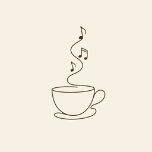

Slow Pour
music, brewed slowly
Some music is like a slow-poured cup — unhurried, warm, and worth sitting with.
Slow Pour is a small room where every hour of your day has its own sound: smooth jazzhop for busy desks, soft ambient for deep nights, gentle flute for quiet minds.
All music is original sound created with AI-assisted tools, then curated, arranged and mastered by Slow Pour.